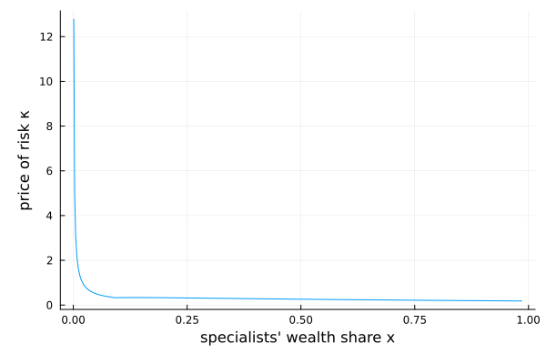

He–Krishnamurthy (2013): intermediary asset pricing
Households cannot hold the risky asset directly — they invest only through specialist intermediaries, and their equity stake in an intermediary is capped at a multiple $m$ of the intermediary's net worth. The single state $x$ is the specialists' wealth share. When $x$ falls the sector's risk-bearing capacity shrinks, the constraint binds, and the price of risk rises. The unknown is the specialists' wealth–consumption ratio $p_S$; goods-market clearing ties the aggregate price–consumption ratio $p$ to it.
The model
The parameters:
using EconPDEs, Plots
Base.@kwdef struct HeKrishnamurthy
# See Table 2—Parameters and Targets
m::Float64 = 4 # intermediation multiplier
λ::Float64 = 0.6 # Debt/assets of intermediary sector
g::Float64 = 0.02 # dividend growth
σ::Float64 = 0.09 # dividend volatility
ρ::Float64 = 0.04 # time discount rate
γ::Float64 = 2.0 # risk aversion specialist
l::Float64 = 1.84 # labor income ratio
endMain.HeKrishnamurthyThe state space
We build the grid and the initial guess first, because they fix the names used everywhere else. The grid is a NamedTuple whose key is the state variable (x, the specialists' wealth share); the guess is a NamedTuple whose key is the unknown function (pS), holding one starting value at each grid point. These names are what reappear inside the equation below — e.g. pSx_up will be the forward finite difference of pS in x.
One state $x \in (0, 1)$ on a grid stretched toward the lower boundary where the constraint bites. The single unknown $p_S$ is initialized flat at one.
m = HeKrishnamurthy()
xn = 100
stategrid = (; x = range(0, 1, length = xn+2)[2:(end-1)].^1.5)
yend = (; pS = ones(length(stategrid[:x])))(pS = [1.0, 1.0, 1.0, 1.0, 1.0, 1.0, 1.0, 1.0, 1.0, 1.0 … 1.0, 1.0, 1.0, 1.0, 1.0, 1.0, 1.0, 1.0, 1.0, 1.0],)The equation
We now write the function encoding the equilibrium conditions. Following the package convention, it takes the current state (a grid point) and u — the local bundle holding the unknown and its finite-difference derivatives there (pS, pSx_up, pSx_down, pSxx) — and returns the time derivative pSt.
Goods-market clearing expresses the aggregate price–consumption ratio $p$ (and its derivatives) in terms of $p_S$. The state volatility $\sigma_x$ feeds back through prices, so the upwind direction is chosen from the drift $\mu_x$: forward pSx_up unless the drift turns negative, then backward pSx_down.
function (model::HeKrishnamurthy)(state::NamedTuple, u::NamedTuple)
# `m` here is the intermediation multiplier (a model parameter), so the model instance is `model`.
(; m, λ, g, σ, ρ, γ, l) = model
(; pS, pSx_up, pSx_down, pSxx) = u
(; x) = state
iter = 0
pSx = pSx_up
@label start
# market clearing for goods gives x / pS + (1 - x) * ρ = (1 + l) / p
# This allows to obtain p (and its derivatives) in terms of pS (and its derivatives)
p = (1 + l) / (x / pS + (1 - x) * ρ)
px = - (1 + l) / (x / pS + (1 - x) * ρ)^2 * (1 / pS - ρ - x / pS^2 * pSx)
pxx = - (1 + l) / (x / pS + (1 - x) * ρ)^2 * (- 1 / pS^2 * pSx - 1 / pS^2 * pSx - x / pS^2 * pSxx + 2 * x / pS^3 * pSx^2) + 2 * (1 + l) / (x / pS + (1 - x) * ρ)^3 * (1 / pS - ρ - x / pS^2 * pSx)^2
αI = 1 / (1 - λ * (1 - x))
if x * (1 + m) * αI < 1
αI = 1 / (x * (1 + m))
end
# we have the usual feeback loop between asset prices and wealth
# σx = x * (αI - 1) * (σ + σp)
σx = x * (αI - 1) * σ / (1 - x * (αI - 1) * px / p)
σpS = pSx / pS * σx
σp = px / p * σx
σR = σ + σp
κ = γ * (αI * σR - σpS)
μx = x * (1 - x) * ((αI - (1 - αI * x) / (1-x)) * κ * σR - 1 / pS + ρ - (αI - (1 - αI * x) / (1 - x)) * σR^2 - l / ((1 - x) * p))
if (iter == 0) && (μx < 0)
iter += 1
pSx = pSx_down
@goto start
end
μpS = pSx / pS * μx + 0.5 * pSxx / pS * σx^2
μp = px / p * μx + 0.5 * pxx / p * σx^2
r = 1 / p + g + μp + σ * σp - κ * σR
σCS = κ / γ
μCS = (r - ρ) / γ + (1 + 1 / γ) / (2 * γ) * κ^2
pSt = - (1 / pS + μCS + μpS + σCS * σpS - r - κ * (σCS + σpS))
μR = r + κ * σR
σI = αI * σR
(; pSt), (; pS, p, r, κ, σp, μR, σR, αI, μx, σx, x, px, pxx, σI)
endWith the equation, grid, and guess in hand, pdesolve solves the stationary system:
result = pdesolve(m, stategrid, yend)EconPDEResult
zero: pS (100)
optional: pS, p, r, κ, σp, μR, σR, αI, μx, σx, x, px, pxx, σI
residual_norm: 1.93812141186185e-9The solution
We saved the price of risk $\kappa$ on the grid. It tends to be elevated when specialists are poorly capitalized (low $x$) — exactly the region where the intermediation constraint binds and the sector can absorb little risk.
xs = stategrid[:x]
plot(xs, result.optional[:κ]; xlabel = "specialists' wealth share x", ylabel = "price of risk κ", legend = false)
This page was generated using Literate.jl.